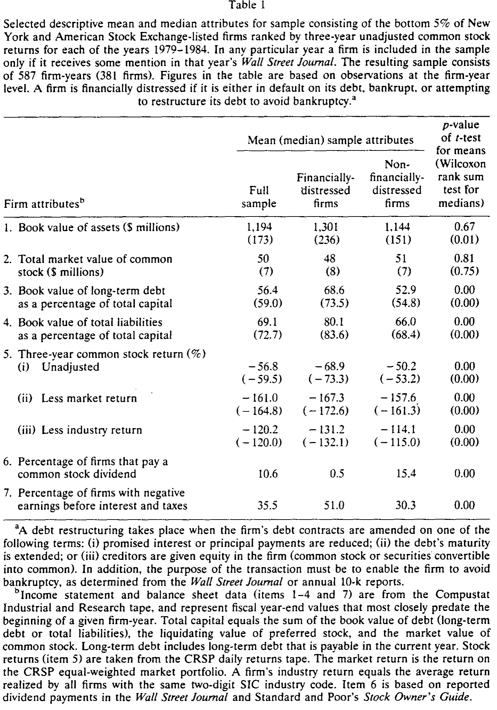
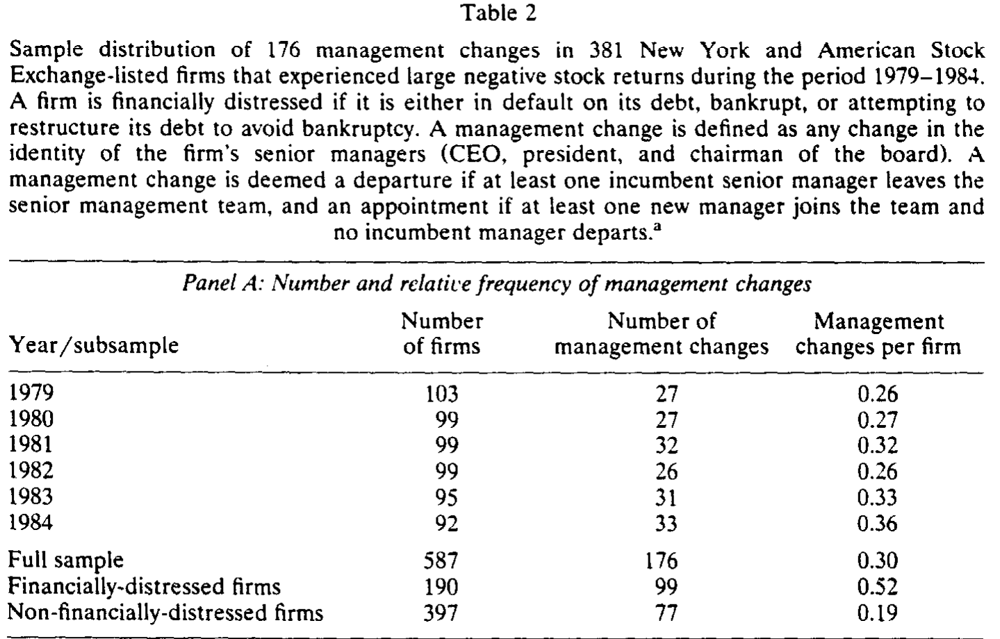
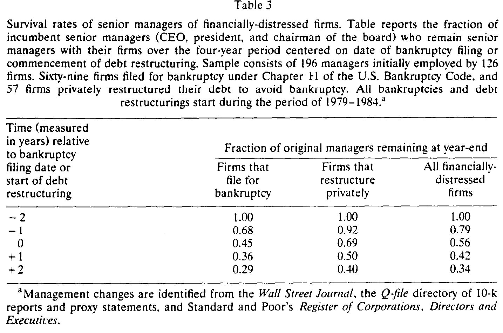
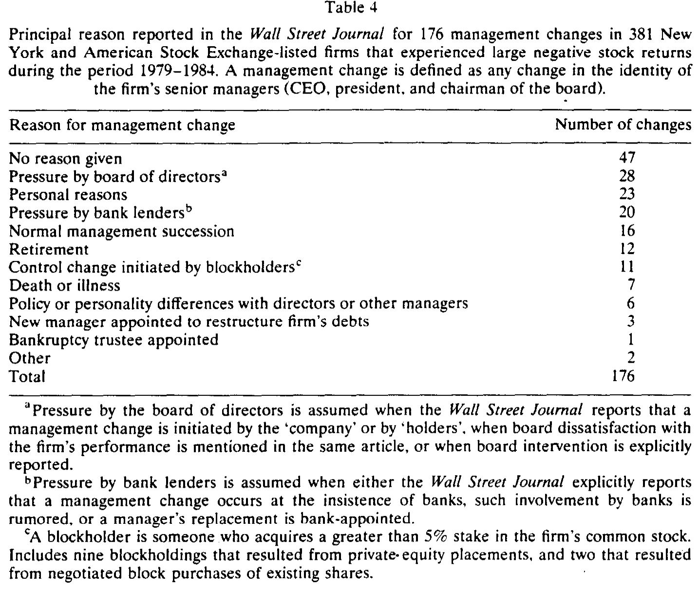
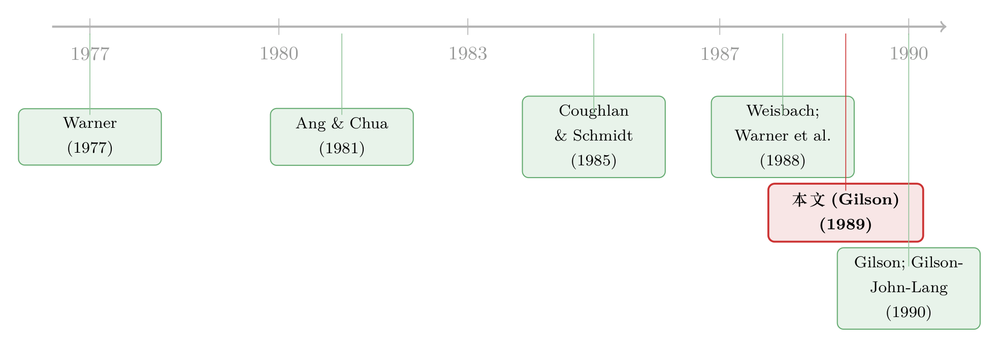

默认那天，谁悄悄丢了乌纱帽
本文读的是 Gilson (1989, Journal of Financial Economics)：在陷入财务困境（违约、破产或庭外重组）的公司里，任一年有 52% 会发生高管更替，而同样亏损但未陷入困境的公司只有 19%；其中约 21% 的更替是由银行债权人直接推动的；离任高管平均年仅 52 岁，却在此后至少三年里再未在任何一家交易所上市公司担任高管。一句话——默认会让经理人付出沉重的私人代价。
1 一个被「假设」掉的数字
整个资本结构理论，其实都压在一个没人称过重的砝码上。
我们太熟悉这套说辞了：经理人厌恶财务困境，所以他们会替公司选择更保守的杠杆 [Friend and Lang (1988)]，会去做风险更低的项目、靠混合并购分散经营现金流、甚至去买保险来对冲 [Smith and Mayers (1982)]；他们还会因此更卖力地经营公司，而这正是杠杆收购 (leveraged buyout, LBO) 创造价值的一个来源 [Jensen (1988)]。更要命的是，Ross (1977) 那个著名的信号模型——经理人用提高杠杆来向市场传递「公司前景好」的信号——能成立的唯一前提，就是说谎者会在公司默认时付出真实的个人代价。否则，谁都可以放心地虚张声势。
于是问题来了：这个「个人代价」到底有多大？大到足以解释我们观察到的那些公司决策吗？
理论把它当成一条公理写了进去，却几乎没人真正去量过它。Gilson (1989) 这篇文章，做的就是这件朴素却要紧的事——它没有发明新模型，而是去找出那个被假设掉的数字。
困难在于，经理人的「效用损失」是看不见的。你怎么给「丢了面子、丢了人脉、丢了对公司的掌控感」标价？Gilson 的办法是退一步：用高管更替 (management turnover) 作为代理变量。如果一个人因为公司默认而被赶下台，又长期找不到同等级别的位子，那么他承受的损失，再怎么也不会小。
2 怎么找到一群「快要出事」的公司
要研究困境，你得先有一批困境公司。但财务困境是个相对稀有的事件，随机抽样太低效。Gilson 用了一个聪明的取巧办法：按股价跌幅抽样。
具体而言，对 1979–1984 的每一年，他从纽交所 (NYSE) 和美交所 (AMEX) 的全部上市公司里，挑出过去三年累计未调整收益率最低的那 5%。股价跌得这么惨的公司，违约、破产、债务重组的概率自然高得多——这就把困境事件「浓缩」了出来，让检验更有力量。初始样本是 685 个公司-年、409 家公司。
这个设计还有两个被作者讲得很清楚的好处。第一，既然全样本都是「股价大跌」的公司，那么其中没有违约的那些公司就构成了一个天然的对照组：它们一样不赚钱、一样被市场嫌弃，唯一的区别是有没有真的陷入债务困境。这样一来，后面把更替归因于「困境」而非「业绩差」时，就有了干净的参照。第二，由于是在一个「可能解释更替」的变量（股价）上分层抽样，得到的是一个外生分层样本 [Manski and McFadden (1983)]，这让第 4 节的更替回归能够一致估计。
接着是几道清洗。要保证能查到更替信息，当年没有在《华尔街日报》(WSJ) 或标普《公司、董事与高管名录》(Register) 露过面的公司-年被剔除；当年被并购的公司-年也被剔除——因为并购后经理人去向难以追踪，且无法判断他是变好还是变差了（这类更替由 Martin and McConnell (1988) 专门研究）。最终样本是 587 个公司-年，381 家公司。
高管更替的定义是：CEO、总裁、董事长这三个头衔所组成的那个群体里，成员发生了任何变动（群体内部互换头衔不算）。而财务困境的定义则是「无法履行债务的固定支付义务」——具体指当年处于违约、破产（《破产法》第 11 章或第 7 章），或为避免破产而进行庭外私下债务重组三种状态之一。
表 1 给出了样本的画像：这些公司普遍小、高杠杆、且极不赚钱。全样本资产账面价值均值 $1,194 百万、中位数仅 $173 百万（最大的 Continental Illinois 资产超过 $40 十亿，把分布拉得极偏）；近三分之二在 AMEX 上市。困境公司的杠杆显著更高——总负债 / 总资本均值 80.1%，对照组 66.0%。业绩则惨不忍睹：三年未调整收益率均值 -56.8%，剔除市场后是 -161.0%，剔除行业后是 -120.2%。困境公司中有 51.0% 报告息税前利润 (EBIT) 为负，对照组也有 30.3%。

Table 1
请记住对照组这 30.3% 的负利润——它后面会成为一处关键的反驳。
3 核心发现：52% 对 19%
把更替率算出来，差距一目了然。
如表 2 所示，全样本里每个公司-年平均发生 0.30 次高管更替。但拆开看：在 190 个「公司当年陷入困境」的公司-年里（约占样本三分之一），平均更替数是 0.52；而在公司未陷入困境的公司-年里，只有 0.19。困境公司发生更替的概率，几乎是非困境公司的三倍——尽管两组公司都同样亏损。这个比例在六年里相当稳定，不是某一年的偶然。

Table 2
而且这些更替大多是「走人」而非「进人」：约 80% 是高管离任（departure），平均每次离任牵动 1.10 位高管。要知道这些公司的高管团队本就很小，平均规模 1.53 人、中位数 2 人——所以一次离任，往往就动了团队的小半壁江山。
接着，一个自然的问题是：上面是「公司-年」口径的流量，那么站在一次困境事件的中心往前往后看，到底有多少高管最终留了下来？
表 3 换了一个更狠的视角。Gilson 锁定 126 家公司（69 家破产、57 家庭外重组）、共 196 位高管，以「破产申请日 / 重组启动日」为第 0 年，前后各追踪两年，记录原班高管在年末仍在位的比例。结果是一条陡峭的下滑曲线：第 −1 年还有 0.79，到第 0 年掉到 0.56，第 +2 年只剩 0.34。也就是说，四年里近三分之二的原高管被换掉了。即便把那些临近退休年龄（65 岁）的人剔除，存活率依然是 0.34，没有变化——这不是「正常退休」能解释的。

Table 3
这里还藏着一个意味深长的对比：庭外私下重组的公司，高管存活率（第 +2 年 0.40）明显高于走破产程序的公司（0.29）。换句话说，走法庭这条路，对在位者更致命。这也解释了为什么公司内部人往往偏好庭外和解——它能让更多人保住位子。（关于困境公司为何宁可走庭外这条暗路、甚至愿意多分钱给股东，可参见《破产之外的那条暗路：为什么「庭外和解」反而肯多给股东一笔钱》与《庭外那条路：为什么有的公司能绕开破产法庭，有的不能》。）
这个量级有多惊人？Gilson 把它放进了文献的坐标系里。Weisbach (1988) 报告的 NYSE 公司年化更替率只有 0.08，Warner et al. (1988) 用与本文完全相同的更替定义，得到的随机样本年均值是 0.12——即便是他们样本里收益率最低的那一档（均值 -51.6%），更替也只有 0.14。这个 0.14 跟本文对照组的 0.19 倒是接近，但远低于困境公司的水平。能跟困境更替相提并论的，只有公司控制权市场里那些剧烈的所有权变更：代理权之争后一年内 38% 高管辞职 [DeAngelo and DeAngelo (1989)]、要约收购后一年内 42% CEO 辞职 [Martin and McConnell (1988)]、大宗股权易手后一年内 45% [Barclay and Holderness (1989)]。困境，原来和「被人敲门收购」是同一个量级的冲击。
4 真正关键的一步：是「困境」，还是只是「业绩差」？
到这里，一个细心的读者一定会皱眉：困境公司业绩更烂啊，更替多，会不会只是「业绩差导致换人」这条老规律的体现，跟「财务困境」本身没关系？
这恰恰是全文识别的命门，也是为什么前面那个对照组如此重要。回想表 1：对照组同样有 30.3% 的公司 EBIT 为负、三年收益率同样深陷负值。两组公司都「业绩差」，差别只在于有没有真的违约。而更替率是 0.52 对 0.19。如果一切都只是业绩驱动，这两个数不该差出三倍。Gilson 正是靠「在低收益样本内部再切一刀」，把「困境」从「单纯的坏业绩」里剥了出来。
但要把因果钉死，光看相关还不够。于是真正关键的一步在于——去翻每一次更替的「原因」。
表 4 把 176 次更替按 WSJ 报道的主要原因做了归类。最大的一类（47 次，占 27%）是「没有给出原因」；接下来是董事会施压 28 次、个人原因 23 次、银行债权人施压 20 次、正常交接 16 次、退休 12 次、大股东发起的控制权变更 11 次……

Table 4
请把目光停在「银行」那一行。这是全文最具原创性、也最反直觉的发现：有约 21% 的困境公司高管更替，是银行债权人直接推动的——银行明确要求换人、或者新高管由银行指派。而此前所有研究都没记录过这种「债权人直接插手换帅」的现象，原因很简单：过去的更替研究样本里几乎都是偿付正常的公司，银行根本没有这种影响力。
更耐人寻味的是，Gilson 指出实际数字可能远高于报道值——因为公开披露这种干预，会让银行在「贷款人责任 (lender liability)」法下面临被起诉的风险 [Douglas-Hamilton (1975)]，所以银行有动机保持低调。而且，这些银行在动手换人之前，几乎不持有公司任何投票权股份。它们靠的不是股权，而是债务契约赋予的控制权。Gilson 在姊妹篇 (Gilson 1990) 里进一步发现，银行还会影响困境公司的董事选任、并在重组后的贷款契约里取得对投融资政策的否决权。James (1987) 则提供了互补的市场证据：公司宣布新银行贷款协议时，股东能获得近 2% 的正异常收益，他把这归因于银行提供的监督服务的价值。
文章里那段 Federal Resources 公司前 CEO 的牢骚，活灵活现：「没有银行点头，我们花不了一分钱，做不成一笔交易……本该掌舵的人，根本无权管理这家公司。」债权人没坐进董事会，却已经握住了方向盘。
（关于困境时刻究竟是谁悄悄接管了公司、银行与大股东如何重新瓜分控制权，正是 Gilson 自己的另一篇文章所做的事，可参见《违约那天，谁悄悄接管了这家公司？》；而日本主银行如何在困境中扮演类似角色、让有主银行的公司「摔得更轻」，可参见《困境企业的『靠山』》。）
5 损失到底有多重：52 岁就退场，三年无处可去
更替本身不等于损失——除非更替真的让经理人的财富或福利缩水。Gilson 在这里给出了最有力的一笔。
被迫离任的高管会损失什么？收入、公司专属的人力资本、权力与声望等非金钱收益，以及——如果更替被市场解读为「无能」的信号——还会损失名誉和离职后的市场价值。当然，反方向也有：如果他们离职后更看重闲暇，损失就没那么严重。所以单看更替，可能低估真实损失（因为有些经理人即便没被换掉，薪酬或决策权也已被削），也可能在某些情形下高估。
那么这些离任者后来怎么样了？数字冷峻：他们的平均年龄只有 52 岁，远未到退休；然而在离职后的至少三年里，没有一个人在另一家交易所上市公司担任高管职位。一个 52 岁、本该正值职业巅峰的人，从此在公开市场的高管圈里销声匿迹。这强烈暗示，困境带来的不是一次普通的人事变动，而是一道难以跨越的职业悬崖。Sutton and Callahan (1987) 关于「破产污名」的研究，与这一发现遥相呼应。
到此，Gilson 把那个被理论假设掉的砝码称了出来：经理人对默认的恐惧，是真实而沉重的。资本结构理论里那条公理，第一次有了实证的体温。
6 文献脉络
把这篇文章放回它生长的那条线上，会看得更清楚。
最早探问「破产会不会换掉经理人」的是 Warner (1977b)：他研究了 1933–1955 年 11 家铁路公司的破产，发现破产后五年里 CEO 年均被换的比例只有 8%，而对照组非破产铁路是 9%——几乎没差别，似乎破产并不特别。Ang and Chua (1981) 看 1969–1973 年 52 家破产公司，发现 30% 的高管在破产申请两年内丢了工作。但这两项早期工作都没研究庭外重组的公司，也没有控制其他影响更替的因素。
与此同时，公司治理这一侧的研究在平行推进：Coughlan and Schmidt (1985)、Weisbach (1988)、Warner et al. (1988) 一步步确立了「业绩差 → CEO 被换」这条经验规律，并把更替率的「正常基准」钉了下来（年均 0.08–0.12）。这恰好为 Gilson 提供了对照的标尺。

Gilson (1989) 站在这两条线的交汇处：它把「困境 → 更替」的问题，第一次放进一个带干净对照组、且区分破产与庭外重组的设计里来回答，并意外地挖出了「银行直接换帅」这条全新的暗线。它也直接孕育了作者自己后续的研究——Gilson (1990) 关于困境中董事、银行与大股东的所有权变迁，以及 Gilson, John, and Lang (1990) 关于困境债务私下重组的经验研究。这三篇放在一起，几乎重写了我们对「公司默认那一刻内部权力如何重组」的理解。
7 评论与延伸（Q&A + 研究方向）
(a) 几个可能的疑问
Q：用「高管更替」来代理「经理人损失」，会不会太粗？
会有偏差，但方向是可控的，且作者讲得很诚实。它可能低估损失（有人没被换掉，但薪酬/决策权已被削减），也可能高估（有人离职后更享受闲暇）。真正把损失「钉死」的，是那个 52 岁离任、三年内无处任职的事实——这比更替率本身更有说服力。
Q：52% vs 19% 会不会只是「业绩差换人」，跟财务困境无关？
这正是全样本「皆为股价大跌公司」这一设计要回答的。对照组同样亏损（30.3% 负 EBIT）、同样股价腰斩，唯一区别是有没有违约，而更替率差出三倍。再加上表 4 里 21% 的更替由银行直接推动——这条机制只在公司真的欠不上钱时才会出现，单纯业绩差解释不了它。
Q：「按股价跌幅抽样」会不会污染结论？
这是优点而非缺陷。它让困境事件浓缩、让对照组天然可比，且在一个解释变量上分层抽样得到的是外生分层样本 [Manski and McFadden (1983)]，能一致估计更替回归。代价是外部效度——结论是关于「股价大跌的小公司」的，不能直接外推到所有公司。
Q：银行没有股权，凭什么能换掉 CEO？
靠债务契约的控制权，而非投票权。违约触发契约条款后，银行获得了对投融资政策的否决权乃至换人的话语权（Gilson 1990 有更系统的证据）。这也是为什么这种现象在以往「偿付正常公司」的样本里从未被记录——银行平时根本没有这种筹码。
Q：为什么庭外重组的高管存活率（0.40）高于破产（0.29）？
走法庭意味着控制权更彻底地旁落、污名更重、且程序本身可能引入破产受托人。庭外和解则保留了更多内部人的位子，这也解释了为何公司内部人偏好私下重组——它对在位者更「温柔」。
Q：报道原因里 27% 是「未给出原因」，会不会把结论带偏？
这是个真实的隐忧。该比例高于 Warner et al. (1988) 的 15% 和 Weisbach (1988) 的 22%，作者归因于小公司媒体覆盖少、以及内部人不愿公开「业绩不佳导致换人」。若这 47 次里隐藏着更多银行/董事会施压，那么 21% 的银行驱动比例是被低估的——结论方向不会反转，只会更强。
(b) 几个可能的研究问题与提案
1. 债权人换帅的「债」从哪来？——银行贷款 vs. 公开债券
【经济故事】Gilson 发现银行能在困境中直接换帅，靠的是私下债务的控制权与可重新谈判性。那么如果一家公司的困境债务主要是分散的公开债券而非集中的银行贷款，债权人协调成本高、契约控制权弱，是否就换不动人？这能把「债权人结构」与「困境治理强度」直接挂钩。 【可行性】中。需要困境公司的债务结构数据（银行贷款占比 vs. 债券占比）与高管更替记录。今天的 Capital IQ / DealScan + 公告数据可做，识别上可用「债务集中度」的外生变动（如银团结构）做工具。
2. 困境换帅与公司债定价：债权人会为「能换人」付费吗？
【经济故事】如果债权人有能力在违约时换掉无能管理层，这本身是一种事前的监督价值，应当反映在信用利差里——契约里允许债权人介入治理的公司，发债成本是否更低？这把本文的治理发现接回信用市场定价。 【可行性】中。需要债券契约文本（契约严格度、控制权条款）+ 二级市场利差（TRACE）。识别可借助评级或行业冲击。与《股东说了算，债主就要遭殃吗？》的思路相通，但视角是「债权人换帅权」的定价。
3. 离任高管真的「消失」了吗？——长期职业轨迹的现代重做
【经济故事】本文只追踪了三年、且只看「交易所上市公司高管」。今天我们能用更长窗口、更广口径（私营公司、董事席位、咨询职位）追踪困境离任者，量出困境污名的完整折旧曲线：到底是永久退场，还是几年后在别处复出？ 【可行性】高。BoardEx + LinkedIn 式简历数据已能重建高管职业网络。识别上可比较「破产」与「庭外重组」离任者的复出差异，复刻并扩展表 3 的破产 vs. 私下重组对比。
4. 外资债权人会换帅吗？——跨境困境治理
【经济故事】本文的银行换帅发生在美国本土的债银关系里。当困境公司的主要债权人是外国银行或跨境债券持有人时，地理与法律距离是否削弱了他们「直接换帅」的能力与意愿？这把困境治理接入外资持有人这条线。 【可行性】中偏低。需要跨境债权人身份数据与困境事件匹配，样本可能稀薄；但在新兴市场债务危机样本里或许 doable。
8 参考文献
Ang, James and Jess Chua (1981). Corporate bankruptcy and job losses among top level managers. Financial Management, Winter, 70–74.
Barclay, Michael and Clifford Holderness (1989). Private benefits from control of public corporations. (cited in text)
Coughlan, Anne and Ronald Schmidt (1985). Executive compensation, management turnover, and firm performance: An empirical investigation. Journal of Accounting and Economics 7, 43–66.
DeAngelo, Harry and Linda DeAngelo (1989). Proxy contests and the governance of publicly held corporations. Journal of Financial Economics 23, 29–59.
Douglas-Hamilton, Margaret (1975). Creditor liabilities resulting from improper interference with the management of a financially troubled debtor. Business Lawyer 31, 343–365.
Friend, Irwin and Larry Lang (1988). An empirical test of the impact of managerial self-interest on corporate capital structure. Journal of Finance 43, 271–281.
Gilson, Stuart (1989). Management turnover and financial distress. Journal of Financial Economics 25, 211–262.
Gilson, Stuart (1990). Bankruptcy, boards, banks, and blockholders: Evidence on changes in corporate ownership and control when firms default. Journal of Financial Economics, forthcoming.
Gilson, Stuart, Kose John, and Larry Lang (1990). Troubled debt restructurings: An empirical study of private reorganization of firms in default. Journal of Financial Economics, forthcoming.
James, Christopher (1987). Some evidence on the uniqueness of bank loans. Journal of Financial Economics 19, 217–235.
Jensen, Michael (1988). Takeovers: Their causes and consequences. Economic Perspectives 2, 21–48.
Manski, Charles and Daniel McFadden (1983). Alternative estimators and sample designs for discrete choice analysis. In: Structural analysis of discrete data with econometric applications (MIT Press).
Martin, Kenneth and John McConnell (1988). Corporate performance, corporate takeovers and management turnover. Unpublished paper (Purdue University).
Ross, Stephen (1977). The determination of financial structure: The incentive signalling approach. Bell Journal of Economics 8, 23–40.
Smith, Clifford and David Mayers (1982). On the corporate demand for insurance. Journal of Business 55, 281–296.
Sutton, Robert and Anita Callahan (1987). The stigma of bankruptcy: Spoiled organizational image and its management. Academy of Management Journal 30, 405–436.
Warner, Jerold (1977b). Bankruptcy costs: Some evidence. Journal of Finance 32, 337–347.
Warner, Jerold, Ross Watts, and Karen Wruck (1988). Stock prices and top management changes. Journal of Financial Economics 20, 461–492.
Weisbach, Michael (1988). Outside directors and CEO turnover. Journal of Financial Economics 20, 431–460.